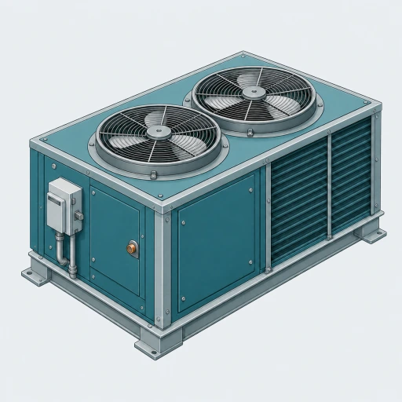
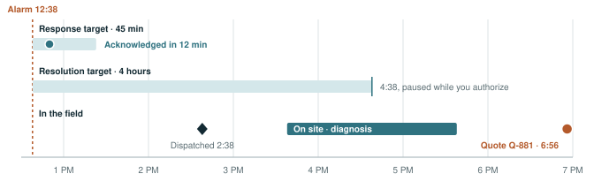

Repair proposal · Q-881
Camden Freezer Campus · Service case SC-1041
Prepared for Camden Cold Storage · Owen Reed

$3,260
Parts, lift and refrigerant check for a fixed price. Labor is included under your Cold Chain Priority contract, NLM-23077.
Summary
RTU-2 lost its condenser-fan proof this afternoon and is off line. Our technician found a failed fan motor. Replacing it is a major component under your contract, so we need your authorization before we start.
Once you sign, we can have RTU-2 running again the same day, with head pressure verified and the readings recorded on the case.
Equipment
RTU-2 · Lennox Energence L
Serial NLM-RTU2-5571
Site
88 Ferry Avenue
Camden, NJ 08104
Contract
NLM-23077 · Cold Chain Priority
24/7 coverage to May 16, 2027
Prepared by
Avery Chen
Service manager
Date
November 11, 2026
Valid until
November 26, 2026
At 12:38 PM the building controls reported that RTU-2’s condenser fan had stopped proving. We acknowledged the alarm twelve minutes later, well inside your 45-minute response target, and dispatched a technician at 2:38.

With no condenser airflow, RTU-2 can’t reject heat. Supply air has climbed to within four degrees of return air, and the compressor is drawing high current trying to keep up.
Supply air
74.1°F
Elevated: the unit is barely cooling.
Return air
78.0°F
A 3.9°F spread across the coil.
Compressor current
31.6A
High, from rising head pressure.
Cold Chain Priority, NLM-23077, covers Camden Freezer Campus around the clock from May 16, 2026 to May 16, 2027. It includes our labor on this repair, but not the motor itself.
Why this needs your signature. The condenser-fan motor is a major component, and at $3,260 the repair is over your $1,500 approval threshold. Everything else on this visit is covered.
We’ll replace the failed motor and the parts that wear with it, then prove the unit back to normal before we leave.
| Item | Detail | Amount |
|---|---|---|
| Condenser-fan motor | 1 HP, 1,075 rpm, three-phase, matched to the Energence L | $1,480 |
| Fan blade and hub | Replaced with the motor and balanced to it | $420 |
| Run capacitor and contactor | Replaced with the motor | $260 |
| Rooftop lift | Hoist to set the motor on the curb | $600 |
| Refrigerant check | Head pressure verified, up to 4 lb of R-410A | $380 |
| Haul-away | Old motor and blade, disposed of properly | $120 |
| Labor | Diagnosis, replacement and commissioning | Included |
| Total | $3,260 | |
The price is fixed. If we find anything else that needs work, we’ll quote it separately and won’t start it without you.
The motor is in stock at our Cherry Hill branch. Your case clock restarts the moment you sign.
Avery confirms the start time with you and the technician picks up the motor.
The motor, blade, capacitor and contactor go in, with PPE past the security vestibule as your site requires.
We verify head pressure, check supply air is back to setpoint, and clear the alarm.
We review RTU-2’s overnight readings and close SC-1041 with the results.
By signing, Camden Cold Storage authorizes Northline Mechanical to carry out the work in section 03 at Camden Freezer Campus for a fixed price of $3,260, invoiced under contract NLM-23077 on completion.
For Northline Mechanical
Avery Chen
Service manager
Authorized by
Owen Reed
Camden Cold Storage